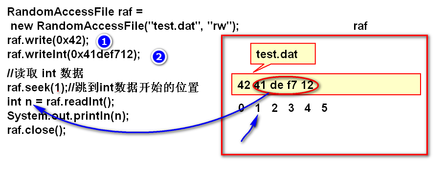
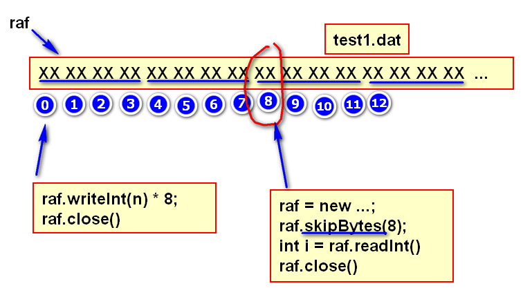
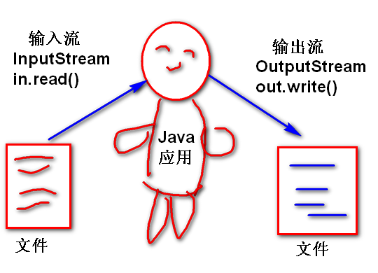
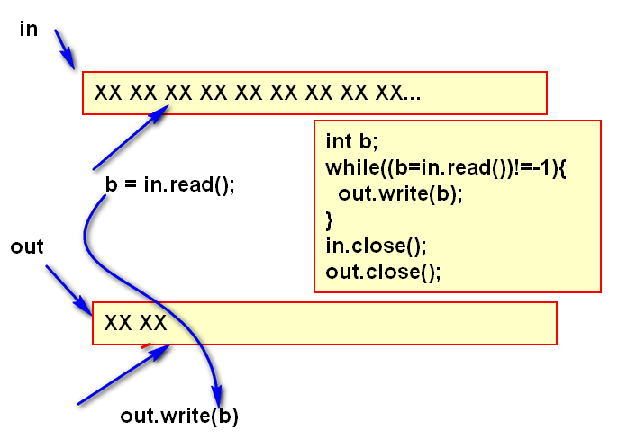
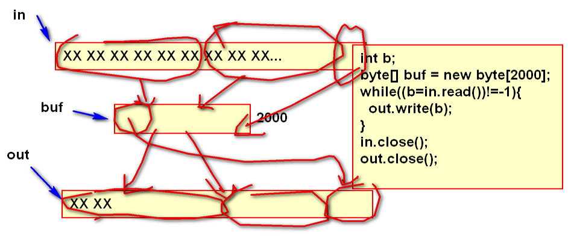

将两个数据对其的位进行“与”运算
1 & 1 = 1
1 & 0 = 0
0 & 1 = 0
0 & 0 = 0
案例：
n= 01101101 10110111 10110110 11100101
mask 00000000 00000000 00000000 11111111
&---------------------------------------
m 00000000 00000000 00000000 11100101
mask: 面具， 掩码
代码：
int n = 0x6db7b6e5;
int mask = 0xff;
int m = n & mask;//掩码运算
System.out.println(
Integer.toBinaryString(n));
System.out.println(
Integer.toBinaryString(mask));
System.out.println(
Integer.toBinaryString(m));
掩码运算：
1. 用于将数据的一部分截取出来。
2. 掩码运算结果是2整次幂余数。
%2 ：&0x1
%4 : &0x3
%8 : &0x7
%16: &0xf
0000 % 4 = 00 0000 & 0011 = 00
0001 % 4 = 01 0001 & 0011 = 01
0010 % 4 = 10 0010 & 0011 = 10
0011 % 4 = 11 ...
0100 % 4 = 00
0101 % 4 = 01
0110 % 4 = 10
0111 % 4 = 11
1000 % 4 = 00
...
经典面试题：
如何优化 n%8 运算的性能（答案：n&0x7）
案例：
int i=0;
System.out.println(i++ & 0x7);
System.out.println(i++ & 0x7);
System.out.println(i++ & 0x7);
System.out.println(i++ & 0x7);
System.out.println(i++ & 0x7);
System.out.println(i++ & 0x7);
System.out.println(i++ & 0x7);
System.out.println(i++ & 0x7);
掩码运算用途
将整数进行拆分
n=01101101 01100100 11000011 00010001
b1=00000000 00000000 00000000 01101101
b2=00000000 00000000 00000000 01100100
b3=00000000 00000000 00000000 11000011
b4=00000000 00000000 00000000 00010001
b1=(n>>>24)&0xff;
b2=(n>>>16)&0xff;
b3=(n>>>8)&0xff;
b4=(n>>>0)&0xff;
合并b1, b2, b3, b4 为一个int
int n = (b1<<24)|(b2<<16)|(b3<<8)|b4
运算规则两个数按位对齐进行或运算
1|1 = 1
1|0 = 1
0|1 = 1
0|0 = 0
案例：
b1=00000000 00000000 00000000 10110101
b2=00000000 00000000 11011011 00000000
|--------------------------------------
n 00000000 00000000 11011011 10110101
合并b1, b2, b3, b4 为一个int
int n = (b1<<24)|(b2<<16)|(b3<<8)|b4
文件：
00101011 01110111 11011011 11011011
0 1 2 3 ^
int b1=raf.read();
b1:00000000 00000000 00000000 00101011
b2=raf.read();
b2:00000000 00000000 00000000 01110111
b3=raf.read();
b3:00000000 00000000 00000000 11011011
b4=raf.read();
b4:00000000 00000000 00000000 11011011
int m = b1|b2|b3|b4 >0
案例：将字符串写到文件中
1. "今天你吃了吗？"
2. 序列化为byte[]
3. write(byte[] buf)
代码：
RandomAccessFile raf =
new RandomAccessFile("demo.txt","rw");
String str = "今天你吃了吗？";
byte[] buf = str.getBytes("UTF-8");
raf.write(buf);
raf.close();
原理
RandomAccessFile raf = new ...;
byte[] buf=new byte[200];
//从文件raf中读取多个byte填充到buf数组中，返回值n表示填充个数
int n = raf.read(buf);
System.out.println(n);
//n表示，200个字节中前n个是有效的
String str =
new String(buf,0,n,"utf-8");
System.out.println(str);
raf.close();


缺点：没有提供更复杂数据的读写方法。
流是一套API（灰常多）,提供了各种类型数据的读写API！流是一套可扩展的API，通过扩展的API支持了各种类型数据的读写。

流是从两个抽象类扩展的：
输入流是抽象类，所有的输入扩展流都扩展于InputStream。
InputStream 定义了基本的数据读取方法 read 其读取规则与 RAF 中的read规则一致。
InputStream是抽象类，不能直接使用，使用的都是其子类。
输出流是抽象类，所有的输出扩展流都扩展于OutputStream。
OutputStream 定义了基本的数据写出方法 write 其写出规则与 RAF 中的write规则一致。
OutputStream是抽象类，不能直接使用，使用的都是其子类。
文件输出流是 OutputStream 的子类，实现了其约定的抽象方法：write
使用文件流可以向文件写出数据。
文件流的构造器必须给定被写出的文件名
重载的构造器可以按照追加的方式打开文件，打开以后文件的写入位置在文件的末尾，写出数据追加到文件的末尾。
文件输出流在打开文件时候，如果文件不存在就创建文件，如果不是追加方式时候就将文件的内容清空，重写写文件。如果文件名是一个目录，这时候抛出异常！
文件输出的API方法
案例：
FileOutputStream out =
new FileOutputStream("demo.txt");
out.write("Hello World!".getBytes());
out.close();//使用后务必关闭文件流
文件输入流继承了抽象类InputStream，实现了其全部的抽象方法。可以从文件中读取byte数据。
构造器
FileInputStream构造器用于以读取的方式打开文件，如果文件不存在（或者是目录）则抛出文件没有找到的异常！
API方法
文件输入流只能从文件中读取byte数据，如果希望能够读取更复杂的数据，需要使用扩展流实现。读取方法返回-1表示读取到文件的末尾。
案例：
FileInputStream in =
new FileInputStream("demo.txt");
int car;
while((car=in.read())!=-1){
System.out.print((char)car);
}
in.close();
案例：利用输入输出流实现文件的复制：


代码：
FileInputStream in =
new FileInputStream("movie.flv");
FileOutputStream out =
new FileOutputStream("new.flv");
int n;
byte[] buf = new byte[8*1024];//缓冲区
while((n = in.read(buf))!=-1){
out.write(buf, 0, n);
}
in.close();
out.close();
System.out.println("完成！");
缓冲流是一种扩展流，其在基本的byte节点流的基础上扩展了自动化缓冲区管理功能。使用缓冲流可以简化缓冲区的管理，提高流的IO性能。工作中使用的非常广泛。
缓冲流有两个类 BufferedInputStream 和BufferedOutputStream 分别是输入缓冲流和输出缓冲流。输入缓冲流为输入流扩展了缓冲区功能，输出缓冲流为输入流扩展了缓冲区功能。
构造器：
这两个缓冲流的构造器都必须依赖另外一个流作为参数，也就意味着缓冲流是对另外的流进行扩展。
API方法：
这些方法就是从 流继承的方法，这些方法封装了缓冲区的管理功能，能够自动化的管理缓冲区，使用这些方法可以就可以使用缓冲区了。
当关闭缓冲流时候，其内部的节点流也自动关闭, 如果忘记关闭缓冲流，会发生缓冲数据丢失的情况
flush()方法可以清理缓冲区，将缓冲区中的数据写到文件中，其目的是保证数据可靠写入到文件，如果频繁调用此方法，则缓冲区就失去意义了。